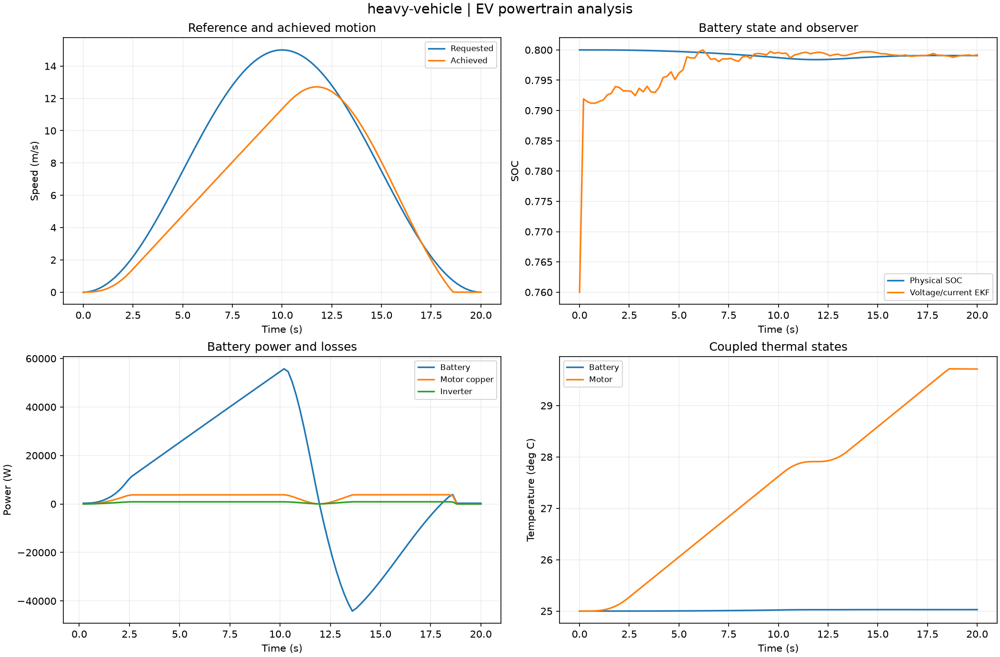

Reproducible EV powertrain analysis. Units and field components are printed on the scientific axes. peak d-q quantities use exp(+i omega t); terminal currents point into the protected line.
Sealed numeric archive | Summary CSV | Physical parameters | Run request | Source and environment

| distance_m | 119.81643289288928 |
|---|---|
| final_soc | 0.7990691199341543 |
| limited_fraction | 0.6237623762376238 |
| maximum_bus_residual_v | 9.975692705666006e-06 |
| net_battery_wh | 50.71529493588387 |
| speed_rmse_m_s | 2.344693384917913 |
These are simulations, not hardware measurements. Network-model, measurement, timing and statistical uncertainty require distinct convergence checks. Singular or unilluminated data use explicit masks.
Source revision: 2792f3a8b3e00c0f3d682921027e49ad8ab7aae8.
Dirty checkout: False.
Configuration SHA-256: 495e2c54f3f0974679f70a1e4416662dcd5135b06ec4377cfaa912a0446456a1.
Replay preserves original source and parameter provenance. SHA-256 manifests detect changed bytes; they are unsigned integrity records, not certificates of physical validity.